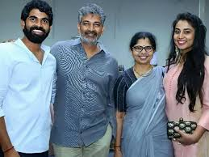
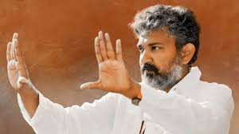
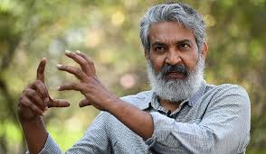

SS Rajamouli is a Telugu film director and screenwriter who is in news for his recent movie RRR. The movie has become India's highest-ever grossing movie, beating the records set by Baahubali 2. Interestingly, Baahubali 2 has also been directed by SS Rajamouli. SS Rajamouli started his career with ETV under the guidance of K. Raghavendra Rao. He initially directed Telugu soap operas and later directed the TV series Santhi Nivasam.
family
He married Rama Rajamouli in 2001, and the couple has two kids, S. S. Karthikeya and S. S. Mayookha.
Personal Images
 Disclaimer
This figures are used by me.
Signature